You should be able to program your Arduino with just about any computer using a piece of software called an integrated development environment (IDE). To run this software, your computer should have one of the following operating systems installed:
- Mac OS X or higher
- Windows XP 32- or 64-bit, or higher
- Linux 32- or 64-bit (Ubuntu or similar)
Now is a good time to download and install the IDE, so jump to the heading that matches your operating system and follow the instructions. Make sure you have or buy the matching USB cable for your Arduino from the supplier as well. Even if you don’t have your Arduino board yet, you can still download and explore the IDE. Because the IDE version number can change quite rapidly, the number in this book may not match the current version, but the instructions should still work.
Mac OS X
In this section, you’ll find instructions for downloading and configuring the Arduino IDE in Mac OS X.
Installing the IDE
To install the IDE on your Mac, follow these instructions:
- Using a web browser such as Safari, visit the software download page located at http://arduino.cc/en/Main/Software/, as shown in Figure 1-7.
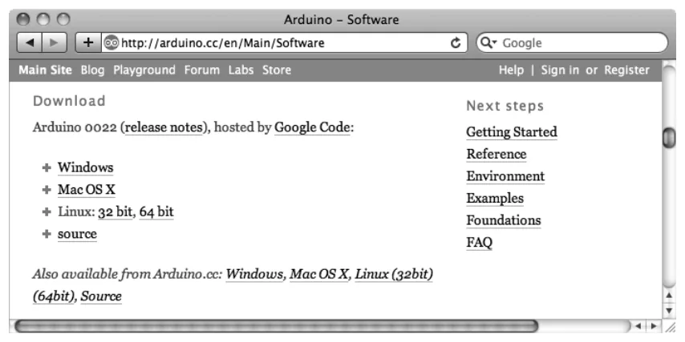
- Click the Mac OS X link. The file will start downloading, and it will appear in the Downloads window shown in Figure 1-8.
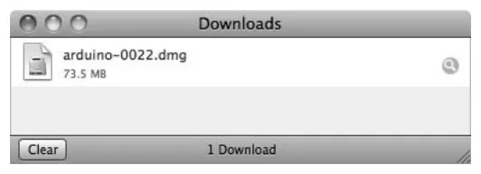
- Once it’s finished downloading, double-click the file to start the installation process. You will then be presented with the window shown in Figure 1-9.
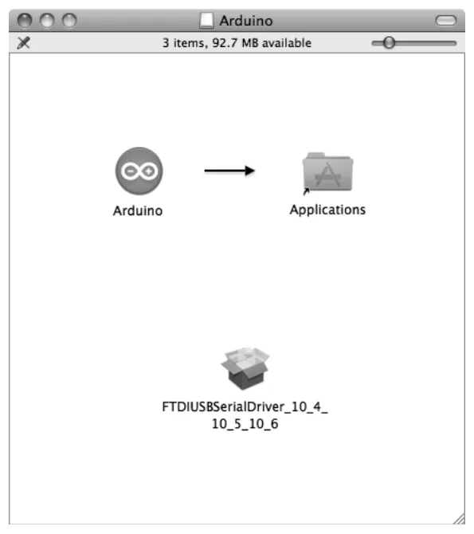
- Drag the Arduino icon over the Applications folder and release the mouse button. A temporary status window will appear as the file is copied.
- Now connect your Arduino to your Mac with the USB cable. After a moment, the dialog shown in Figure 1-10 will appear.
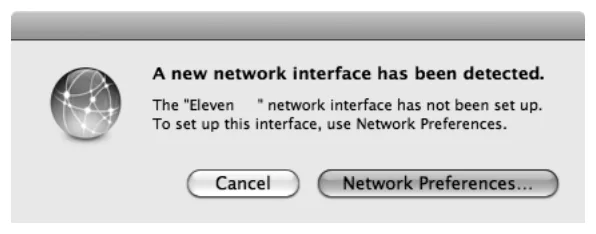
- Click Network Preferences..., and then click Apply in the Network box. You can ignore the “not configured” status message.
Setting Up the IDE
Once you have downloaded the IDE, use the following instructions to open and configure the IDE:
- Open the Applications folder in Finder (shown in Figure 1-11) and double-click the Arduino icon.
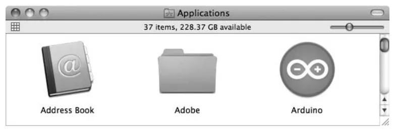
- A window may appear warning you about opening a web app. If it does, click Open to continue. You will then be presented with the IDE, as shown in Figure 1-12.
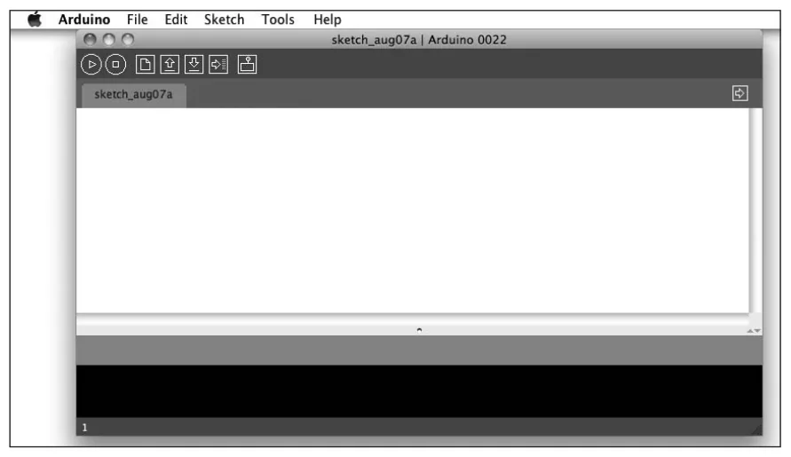
- You’re almost there—just two more things to do before your Arduino IDE is ready to use. First, you need to tell the IDE which type of socket the Arduino is connected to. Select Tools4Serial Port and select the /dev/tty.usbmodem1d11 option, as shown in Figure 1-13.
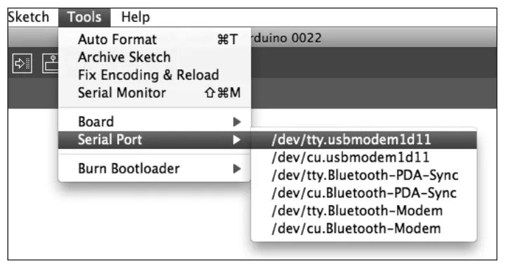
- The final step is to tell the IDE which Arduino board you have connected. This is crucial, since Arduino boards do differ. For example, if you have the most common board, the Uno, then select Tools4Board4Arduino Uno, as shown in Figure 1-14. The differences in Arduino boards are explained in more detail in Chapter 11.
Now your hardware and software are ready to work for you. Next, move on to “Safety” on page 18.
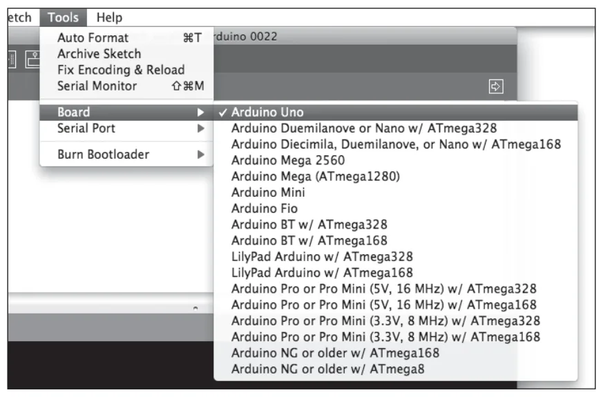
Windows XP and Later
In this section, you’ll find instructions for downloading the IDE, installing drivers, and configuring the IDE in Windows.
Installing the IDE
To install the Arduino IDE for Windows, follow these instructions:
- Using a web browser such as Firefox, visit the software download page located at http://arduino.cc/en/Main/Software/, as shown in Figure 1-15.
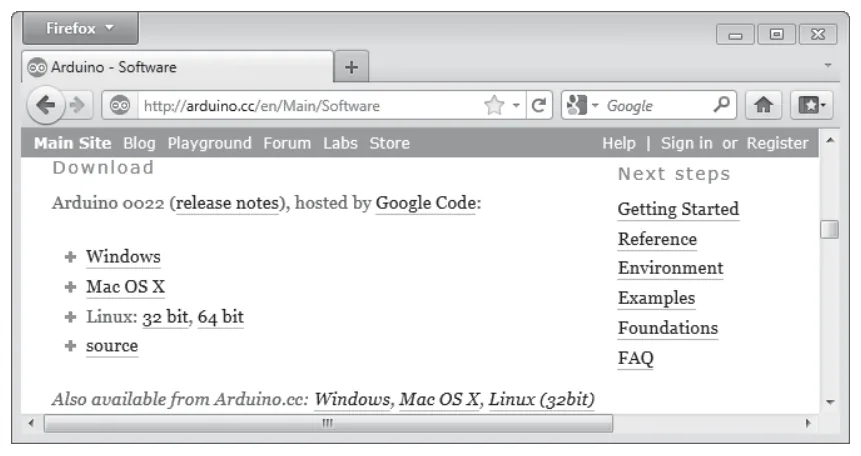
- Click the Windows link, and the dialog shown in Figure 1-16 will appear. Select Open with Windows Explorer, and then click OK. The file will start to download, as shown in Figure 1-17.
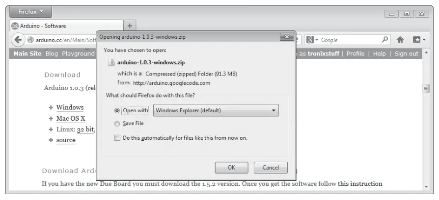
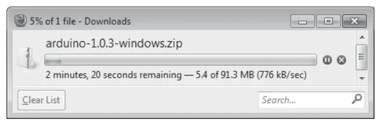
- Once the download is complete, double-click the file, and the window shown in Figure 1-18 will appear.
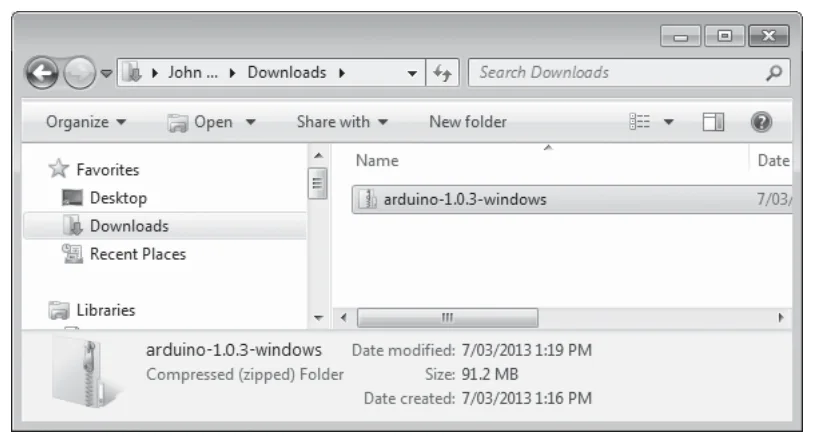
- Copy the folder named arduino-0022 (or something similar) to the location where you store your applications. Once the copying is finished, locate the folder and open it to reveal the Arduino application icon, as shown in Figure 1-19. You may wish to copy the icon and place a short-cut on the desktop for easier access in the future.
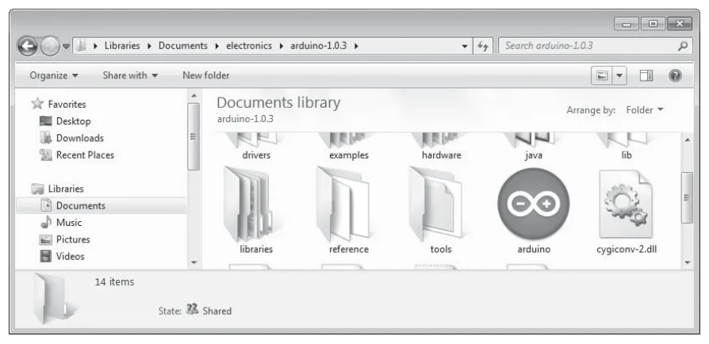
Installing Drivers
The next task is to install the drivers for your Arduino board’s USB interface.
- Connect your Arduino to your PC with the USB cable. After a few moments an error message will be displayed, which will say something like “Device driver software not successfully installed.” Just close that dialog or balloon.
- Navigate to the Windows Control Panel. Open the Device Manager and scroll down until you see the Arduino, as shown in Figure 1-20.
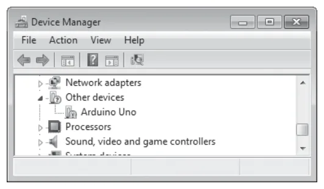
- Right-click Arduino Uno under Other Devices and select Update Driver Software. Then, select the Browse my computer for driver software option that appears in the next dialog. Another Browse For Folder dialog will appear; click Browse, and navigate to the drivers folder in the newly installed Arduino software folder (shown in Figure 1-21). Click OK.
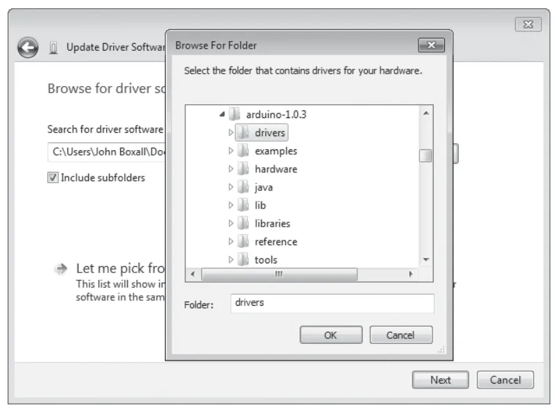
- Click Next in the dialog that follows. Windows may present a message stating that it “cannot verify the publisher of the driver software.” Click Install this software anyway. After a short wait, Windows will tell you that the driver is installed and the COM port number the Arduino is connected to, as shown in Figure 1-22.
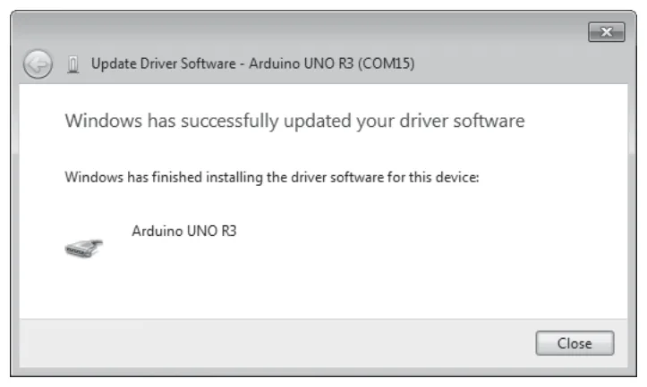
Setting Up the IDE
Okay, we’re almost there—just two more things to do to finish setting up the IDE.
- Open the Arduino IDE. You need to tell the IDE which type of socket the Arduino is connected to by selecting Tools4Serial Port and selecting the COM port number that appeared in the Update Driver Software window.
- The final step is to tell the IDE which Arduino board we have connected. This is crucial, as the Arduino boards do differ. For example, if you have the Uno, select Tools4Board4Arduino Uno. The differences in Arduino boards are explained in more detail in Chapter 11.
Now that your Arduino IDE is set up, you can move on to “Safety” on page 18.
Ubuntu Linux 9.04 and Later
If you are running Ubuntu Linux, here are instructions for downloading and setting up the Arduino IDE.
Installing the IDE
Use the following instructions to install the IDE:
- Using a web browser such as Firefox, visit the software download page located at http://arduino.cc/en/Main/Software/, as shown in Figure 1-23.
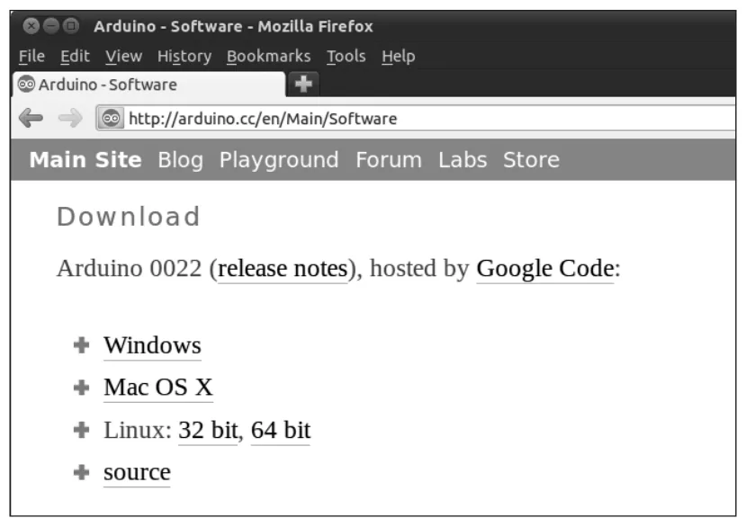
- Click the Linux 32-bit or 64-bit link, depending on your system. When the dialog in Figure 1-24 appears, select Open with Archive Manager and click OK.
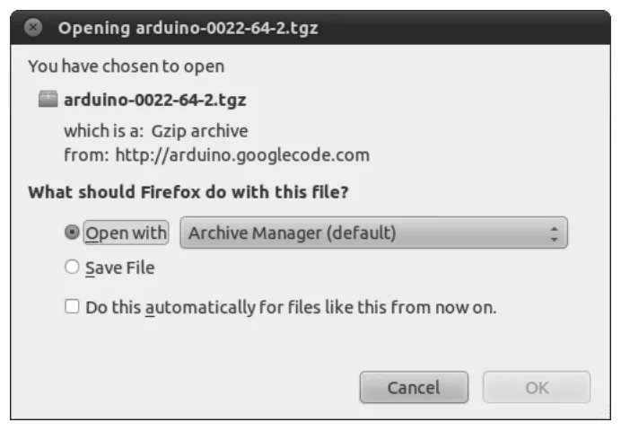
- After the file has downloaded, it will be displayed in the Archive Manager, as shown in Figure 1-25. Copy the arduino-0022 folder (or something similar) to your usual application or Home folder.
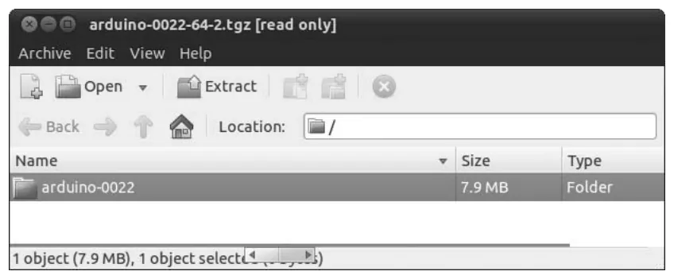
Setting Up the IDE
Next, you’ll configure the IDE.
- Connect your Arduino to your PC with the USB cable. At this point you want to run the Arduino IDE, so locate the arduino-0022 folder you copied earlier and double-click the arduino file that’s selected in Figure 1-26.
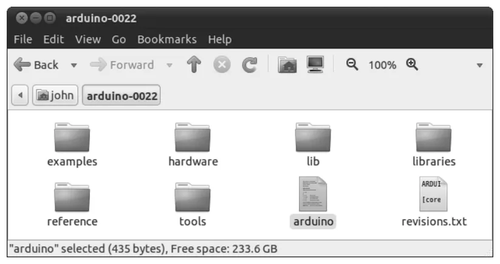
- If the dialog shown in Figure 1-27 appears, click Run, and you will be presented with the IDE, as shown in Figure 1-28.
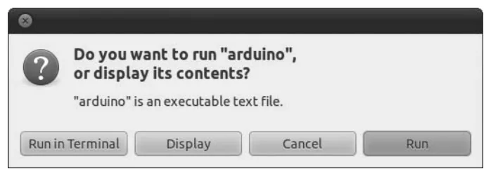
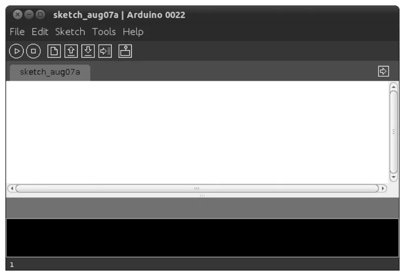
- Now that the IDE is running, we need to tell it which type of socket the Arduino is connected to. Select Tools4Serial Port and select the /dev/ ttyACMx port, where x is a single digit (there should be only one port with a name like this).
- Next, tell the IDE which Arduino you have connected. This is crucial, as Arduino boards do differ. For example, if you have the Uno, select Tools4Board4Arduino Uno. The differences in Arduino boards are explained in more detail in Chapter 11.
Now your hardware and software are ready to work for you.